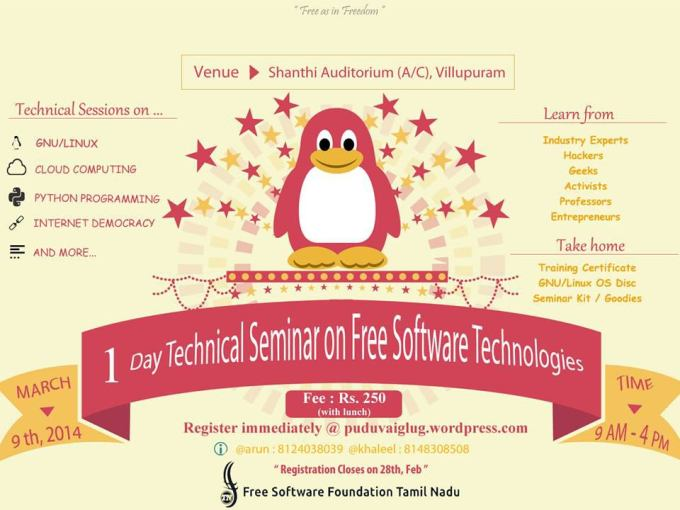

Dive into Free Software
This article is about how I was into the World of Free Software.
My dive into Free Software is because of the opportunity given by Prof. Dr. J Jayachandiran who made me to attend a workshop called Technical Seminar on Free Technologies conducted by Free Software Foundation Tamilnadu which is a non profit organization to promote Free Software, Free culture and Hacker's culture.

This morning I reached Shanthi Auditorium at Villupuram, there I was welcomed by Mr. Karkee Udhayan one of the (h)activist of FSFTN. He asked me to wait for a while and he sent me to Mr. Khaleel Jageer who made the registration for me then I entered the Seminar Hall. There the first talk was about Free Software Philosophy by Mr. Sibi Kanagaraj. I was really inspired by his talk who is the Secretary of FSFTN, (H)activist of FSFTN, and Wikipedia editor. He wrote so many articles in Tamil Wikipedia. He is the one who made me to understand what is Free Software and what for it is. He said there are four freedoms on which the Free Software is all about.
Freedoms of Free Software
- Freedom 0: Free to use the software for any purpose.
- Freedom 1: Free to see the code.
- Freedom 2: Free to modify the code.
- Freedom 3: Free to redistribute.
These freedoms are specified and enforced by an User Licence called GNU Public Licence. This licence officially states that the underlying software is a free software.
After this session, a session on Cloud Computing started which was done by Mr. Yogesh. After this session only I got the idea about Cloud Computing and how it works.
After Cloud Computing we had our lunch and continued with the afternoon session on Python Programming which was taken by Mr. Prassanna Venkatesh who is my Python Guru. He gave very good introduction to python programming and why python is and he said
"Simple thing makes a complex matter"
This session is the kick start to my python programming.
Next session started on Internet Democracy. I just observed what is Internet Democracy and where, when it was violated.
Finally the workshop was over and I spoke with Mr. Sibi Kanagaraj. The conversation is about how to get started with these Free Technologies in which he suggested me to attend the weekly meetups at Pondicherry or Villupuram.
I got so many stuffs from this workshop and also this is the turning point to my learning life.